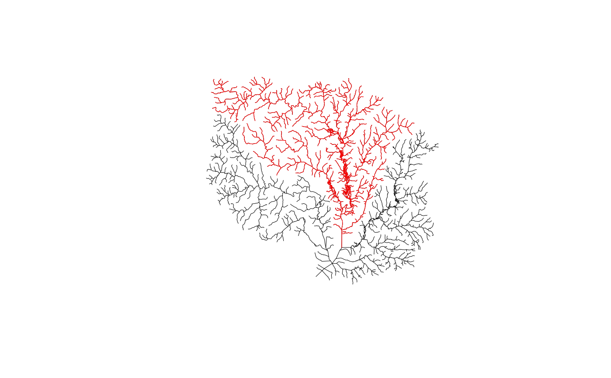

Saves a subset of the National Seamless database or other nhdplusTools compatible data based on a specified collection of COMIDs.
subset_nhdplus(comids = NULL, output_file = NULL, nhdplus_data = NULL, bbox = NULL, simplified = TRUE, overwrite = FALSE, return_data = TRUE, status = TRUE)
Arguments
| comids | integer vector of COMIDs to include. |
|---|---|
| output_file | character path to save the output to defaults to the directory of the nhdplus_data. |
| nhdplus_data | character path to the .gpkg or .gdb containing
the national seamless database, a subset of NHDPlusHR,
or "download" to use a web service to download NHDPlusV2.1 data.
Not required if |
| bbox | object of class "bbox" as returned by sf::st_bbox in Latitude/Longitude. If no CRS is present, will be assumed to be in WGS84 Latitude Longitude. |
| simplified | boolean if TRUE (the default) the CatchmentSP layer will be included. Not relevant to the "download" option or NHDPlusHR data. |
| overwrite | boolean should the output file be overwritten |
| return_data | boolean if FALSE path to output file is returned silently otherwise data is returned in a list. |
| status | boolean should the function print status messages |
Value
path to the saved subset geopackage
Details
If stage_national_data has been run in the current
session, this function will use the staged national data automatically.
This function relies on the National Seamless Geodatabase or Geopackage. It can be downloaded here.
The "download" option of this function should be considered preliminary and subject to revision. It does not include as many layers and may not be available permenantly.
Examples
# \donttest{ sample_data <- system.file("extdata/sample_natseamless.gpkg", package = "nhdplusTools") nhdplus_path(sample_data) staged_nhdplus <- stage_national_data(output_path = tempdir()) sample_flines <- readRDS(staged_nhdplus$flowline) geom_col <- attr(sample_flines, "sf_column") plot(sample_flines[[geom_col]], lwd = 3)start_point <- sf::st_sfc(sf::st_point(c(-89.362239, 43.090266)), crs = 4326) plot(start_point, cex = 1.5, lwd = 2, col = "red", add = TRUE)start_comid <- discover_nhdplus_id(start_point) comids <- get_UT(sample_flines, start_comid) plot(dplyr::filter(sample_flines, COMID %in% comids)[[geom_col]], add=TRUE, col = "red", lwd = 2)output_file <- tempfile(fileext = ".gpkg") subset_nhdplus(comids = comids, output_file = output_file, nhdplus_data = sample_data, overwrite = TRUE, status = TRUE)#>#>#>#>#>#>#>#>#>#>#>#>#>#>#>#> $NHDFlowline_Network #> Simple feature collection with 168 features and 136 fields #> geometry type: MULTILINESTRING #> dimension: XY #> bbox: xmin: -89.58537 ymin: 43.08521 xmax: -89.21254 ymax: 43.30179 #> epsg (SRID): NA #> proj4string: +proj=longlat +ellps=GRS80 +towgs84=0,0,0,0,0,0,0 +no_defs #> # A tibble: 168 x 137 #> COMID FDATE RESOLUTION GNIS_ID GNIS_NAME LENGTHKM REACHCODE #> * <int> <dttm> <chr> <chr> <chr> <dbl> <chr> #> 1 1.33e7 1999-10-29 00:00:00 Medium 1577073 Yahara R… 1.72 07090002… #> 2 1.33e7 1999-10-29 00:00:00 Medium 1577073 Yahara R… 1.41 07090002… #> 3 1.33e7 1999-10-29 00:00:00 Medium 1577073 Yahara R… 0.74 07090002… #> 4 1.33e7 1999-10-29 00:00:00 Medium 1577073 Yahara R… 3.70 07090002… #> 5 1.33e7 1999-10-29 00:00:00 Medium 1577073 Yahara R… 0.077 07090002… #> 6 1.33e7 1999-10-29 00:00:00 Medium 1577073 Yahara R… 0.94 07090002… #> 7 1.33e7 1999-10-29 00:00:00 Medium 1577073 Yahara R… 1.14 07090002… #> 8 1.33e7 1999-10-29 00:00:00 Medium 1577073 Yahara R… 1.27 07090002… #> 9 1.33e7 1999-10-29 00:00:00 Medium 1577073 Yahara R… 7.48 07090002… #> 10 1.33e7 1999-10-29 00:00:00 Medium 1577073 Yahara R… 0.082 07090002… #> # … with 158 more rows, and 130 more variables: FLOWDIR <chr>, #> # WBAREACOMI <int>, FTYPE <chr>, FCODE <int>, Shape_Length <dbl>, #> # StreamLeve <int>, StreamOrde <int>, StreamCalc <int>, FromNode <dbl>, #> # ToNode <dbl>, Hydroseq <dbl>, LevelPathI <dbl>, Pathlength <dbl>, #> # TerminalPa <dbl>, ArbolateSu <dbl>, Divergence <int>, StartFlag <int>, #> # TerminalFl <int>, DnLevel <int>, UpLevelPat <dbl>, UpHydroseq <dbl>, #> # DnLevelPat <dbl>, DnMinorHyd <dbl>, DnDrainCou <int>, DnHydroseq <dbl>, #> # FromMeas <dbl>, ToMeas <dbl>, RtnDiv <int>, VPUIn <int>, VPUOut <int>, #> # AreaSqKM <dbl>, TotDASqKM <dbl>, DivDASqKM <dbl>, Tidal <int>, TOTMA <dbl>, #> # WBAreaType <chr>, HWNodeSqKM <dbl>, MAXELEVRAW <dbl>, MINELEVRAW <dbl>, #> # MAXELEVSMO <dbl>, MINELEVSMO <dbl>, SLOPE <dbl>, ELEVFIXED <chr>, #> # HWTYPE <chr>, SLOPELENKM <dbl>, QA_MA <dbl>, VA_MA <dbl>, QC_MA <dbl>, #> # VC_MA <dbl>, QE_MA <dbl>, VE_MA <dbl>, QA_01 <dbl>, VA_01 <dbl>, #> # QC_01 <dbl>, VC_01 <dbl>, QE_01 <dbl>, VE_01 <dbl>, QA_02 <dbl>, #> # VA_02 <dbl>, QC_02 <dbl>, VC_02 <dbl>, QE_02 <dbl>, VE_02 <dbl>, #> # QA_03 <dbl>, VA_03 <dbl>, QC_03 <dbl>, VC_03 <dbl>, QE_03 <dbl>, #> # VE_03 <dbl>, QA_04 <dbl>, VA_04 <dbl>, QC_04 <dbl>, VC_04 <dbl>, #> # QE_04 <dbl>, VE_04 <dbl>, QA_05 <dbl>, VA_05 <dbl>, QC_05 <dbl>, #> # VC_05 <dbl>, QE_05 <dbl>, VE_05 <dbl>, QA_06 <dbl>, VA_06 <dbl>, #> # QC_06 <dbl>, VC_06 <dbl>, QE_06 <dbl>, VE_06 <dbl>, QA_07 <dbl>, #> # VA_07 <dbl>, QC_07 <dbl>, VC_07 <dbl>, QE_07 <dbl>, VE_07 <dbl>, #> # QA_08 <dbl>, VA_08 <dbl>, QC_08 <dbl>, VC_08 <dbl>, QE_08 <dbl>, #> # VE_08 <dbl>, QA_09 <dbl>, … #> #> $CatchmentSP #> Simple feature collection with 167 features and 6 fields #> geometry type: MULTIPOLYGON #> dimension: XY #> bbox: xmin: -89.60479 ymin: 43.03507 xmax: -89.20378 ymax: 43.36607 #> epsg (SRID): NA #> proj4string: +proj=longlat +ellps=GRS80 +towgs84=0,0,0,0,0,0,0 +no_defs #> # A tibble: 167 x 7 #> GRIDCODE FEATUREID SOURCEFC AreaSqKM Shape_Length Shape_Area #> * <int> <int> <chr> <dbl> <dbl> <dbl> #> 1 1085160 13293454 NHDFlow… 0.328 0.0256 0.0000364 #> 2 1085219 13293750 NHDFlow… 6.69 0.148 0.000740 #> 3 1085247 13294134 NHDFlow… 0.261 0.0307 0.0000288 #> 4 1085414 13293570 NHDFlow… 0.0514 0.00963 0.00000569 #> 5 1085447 13293430 NHDFlow… 1.63 0.0780 0.000181 #> 6 1085448 13293526 NHDFlow… 0.0690 0.0117 0.00000764 #> 7 1085463 13293588 NHDFlow… 0.429 0.0404 0.0000475 #> 8 1085478 13293614 NHDFlow… 3.15 0.0953 0.000348 #> 9 1085502 13294264 NHDFlow… 24.8 0.348 0.00275 #> 10 1085509 13293384 NHDFlow… 0.291 0.0296 0.0000323 #> # … with 157 more rows, and 1 more variable: geom <MULTIPOLYGON [°]> #> #> $NHDArea #> [1] "NHDArea" #> #> $NHDWaterbody #> [1] "NHDWaterbody" #> #> $Gage #> [1] "Gage" #> #> $Sink #> NULL #> #> $NHDFlowline_NonNetwork #> [1] "NHDFlowline_NonNetwork" #>#> Driver: GPKG #> Available layers: #> layer_name geometry_type features fields #> 1 NHDFlowline_Network Multi Line String 168 136 #> 2 CatchmentSP Multi Polygon 167 6 #> 3 NHDArea Multi Polygon 1 14 #> 4 NHDWaterbody Multi Polygon 90 21 #> 5 Gage Point 33 19 #> 6 NHDFlowline_NonNetwork Multi Line String 45 12catchment <- sf::read_sf(output_file, "CatchmentSP") plot(catchment[[attr(catchment, "sf_column")]], add = TRUE)waterbody <- sf::read_sf(output_file, "NHDWaterbody") plot(waterbody[[attr(waterbody, "sf_column")]], col = rgb(0, 0, 1, alpha = 0.5), add = TRUE)# Download Option: subset_nhdplus(comids = comids, output_file = output_file, nhdplus_data = "download", overwrite = TRUE, status = TRUE)#>#>#>#>#>#> $NHDFlowline_Network #> Simple feature collection with 168 features and 91 fields #> geometry type: MULTILINESTRING #> dimension: XYZ #> bbox: xmin: -89.58537 ymin: 43.08521 xmax: -89.21254 ymax: 43.30179 #> epsg (SRID): 4326 #> proj4string: +proj=longlat +datum=WGS84 +no_defs #> # A tibble: 168 x 92 #> id ogc_fid comid fdate resolution gnis_id gnis_name #> <chr> <int> <int> <dttm> <chr> <chr> <chr> #> 1 nhdf… 969122 1.33e7 2001-07-20 00:00:00 Medium " " " " #> 2 nhdf… 969137 1.33e7 1999-10-29 00:00:00 Medium " " " " #> 3 nhdf… 969145 1.33e7 1999-10-29 00:00:00 Medium " " " " #> 4 nhdf… 968876 1.33e7 2009-05-01 00:00:00 Medium " " " " #> 5 nhdf… 969142 1.33e7 1999-10-29 00:00:00 Medium " " " " #> 6 nhdf… 968706 1.33e7 1999-10-29 00:00:00 Medium 1577073 Yahara R… #> 7 nhdf… 968835 1.33e7 1999-10-29 00:00:00 Medium 1577073 Yahara R… #> 8 nhdf… 968836 1.33e7 1999-10-29 00:00:00 Medium " " " " #> 9 nhdf… 968837 1.33e7 1999-10-29 00:00:00 Medium 1571287 Pheasant… #> 10 nhdf… 968838 1.33e7 1999-10-29 00:00:00 Medium " " " " #> # … with 158 more rows, and 85 more variables: lengthkm <dbl>, reachcode <chr>, #> # flowdir <chr>, wbareacomi <int>, ftype <chr>, fcode <int>, #> # streamleve <int>, streamorde <int>, streamcalc <int>, fromnode <dbl>, #> # tonode <dbl>, hydroseq <dbl>, levelpathi <dbl>, pathlength <dbl>, #> # terminalpa <dbl>, arbolatesu <dbl>, divergence <int>, startflag <int>, #> # terminalfl <int>, dnlevel <int>, uplevelpat <dbl>, uphydroseq <dbl>, #> # dnlevelpat <dbl>, dnminorhyd <dbl>, dndraincou <int>, dnhydroseq <dbl>, #> # frommeas <dbl>, tomeas <dbl>, rtndiv <int>, vpuin <int>, vpuout <int>, #> # areasqkm <dbl>, totdasqkm <dbl>, divdasqkm <dbl>, hwnodesqkm <dbl>, #> # maxelevraw <int>, minelevraw <int>, maxelevsmo <int>, minelevsmo <int>, #> # slope <dbl>, elevfixed <chr>, hwtype <chr>, slopelenkm <dbl>, q0001a <dbl>, #> # v0001a <dbl>, qincr0001a <dbl>, q0001b <dbl>, v0001b <dbl>, #> # qincr0001b <dbl>, q0001c <dbl>, v0001c <dbl>, qincr0001c <dbl>, #> # q0001d <dbl>, v0001d <dbl>, qincr0001d <dbl>, q0001e <dbl>, v0001e <dbl>, #> # qincr0001e <dbl>, q0001f <dbl>, qincr0001f <dbl>, arq0001nav <int>, #> # temp0001 <dbl>, ppt0001 <dbl>, pet0001 <dbl>, qloss0001 <int>, #> # qg0001adj <dbl>, qg0001nav <int>, lat <dbl>, gageadj <chr>, avgqadj <dbl>, #> # smgageid <chr>, smgageq <dbl>, etfract1 <dbl>, etfract2 <dbl>, a <dbl>, #> # b <dbl>, bcf <dbl>, r2 <dbl>, ser <dbl>, nref <int>, gageseqp <dbl>, #> # gageseq <int>, shape_length <dbl>, rpuid <chr>, geometry <MULTILINESTRING #> # [°]> #> #> $CatchmentSP #> Simple feature collection with 167 features and 8 fields #> geometry type: MULTIPOLYGON #> dimension: XY #> bbox: xmin: -89.60479 ymin: 43.03507 xmax: -89.20378 ymax: 43.36607 #> epsg (SRID): 4326 #> proj4string: +proj=longlat +datum=WGS84 +no_defs #> # A tibble: 167 x 9 #> id objectid gridcode featureid sourcefc areasqkm shape_length shape_area #> <chr> <int> <int> <int> <chr> <dbl> <dbl> <dbl> #> 1 catc… 948781 1086001 13293406 NHDFlow… 0.0102 0.00514 0.00000113 #> 2 catc… 948404 1085623 13294286 NHDFlow… 0.0985 0.0192 0.0000109 #> 3 catc… 949739 1086976 13294284 NHDFlow… 0.557 0.0353 0.0000616 #> 4 catc… 949897 1087139 13293536 NHDFlow… 0.0341 0.00793 0.00000377 #> 5 catc… 947947 1085160 13293454 NHDFlow… 0.328 0.0256 0.0000364 #> 6 catc… 948005 1085219 13293750 NHDFlow… 6.69 0.148 0.000740 #> 7 catc… 948032 1085247 13294134 NHDFlow… 0.261 0.0307 0.0000288 #> 8 catc… 948197 1085414 13293570 NHDFlow… 0.0514 0.00963 0.00000569 #> 9 catc… 948230 1085447 13293430 NHDFlow… 1.63 0.0780 0.000181 #> 10 catc… 948231 1085448 13293526 NHDFlow… 0.0690 0.0117 0.00000764 #> # … with 157 more rows, and 1 more variable: geometry <MULTIPOLYGON [°]> #> #> $NHDArea #> Simple feature collection with 1 feature and 16 fields #> geometry type: MULTIPOLYGON #> dimension: XY #> bbox: xmin: -89.40194 ymin: 43.15016 xmax: -89.36131 ymax: 43.18112 #> epsg (SRID): 4326 #> proj4string: +proj=longlat +datum=WGS84 +no_defs #> # A tibble: 1 x 17 #> id objectid comid fdate resolution gnis_id gnis_name #> <chr> <int> <int> <dttm> <chr> <chr> <chr> #> 1 nhda… 5849 1.47e7 1999-10-29 00:00:00 Medium " " " " #> # … with 10 more variables: areasqkm <dbl>, elevation <int>, ftype <chr>, #> # fcode <int>, shape_length <dbl>, shape_area <dbl>, onoffnet <int>, #> # purpcode <chr>, purpdesc <chr>, geometry <MULTIPOLYGON [°]> #> #> $NHDWaterbody #> Simple feature collection with 90 features and 23 fields #> geometry type: MULTIPOLYGON #> dimension: XY #> bbox: xmin: -89.72879 ymin: 42.9897 xmax: -89.20939 ymax: 43.40395 #> epsg (SRID): 4326 #> proj4string: +proj=longlat +datum=WGS84 +no_defs #> # A tibble: 90 x 24 #> id objectid comid fdate resolution gnis_id gnis_name #> <chr> <int> <int> <dttm> <chr> <chr> <chr> #> 1 nhdw… 194415 1.33e7 1999-10-29 00:00:00 Medium " " " " #> 2 nhdw… 194432 1.33e7 1999-10-29 00:00:00 Medium " " " " #> 3 nhdw… 194433 1.33e7 1999-10-29 00:00:00 Medium " " " " #> 4 nhdw… 194446 1.33e7 1999-10-29 00:00:00 Medium " " " " #> 5 nhdw… 194692 1.33e7 1999-10-29 00:00:00 Medium " " " " #> 6 nhdw… 194693 1.33e7 1999-10-29 00:00:00 Medium " " " " #> 7 nhdw… 195170 1.33e7 1999-10-29 00:00:00 Medium " " " " #> 8 nhdw… 195171 1.33e7 1999-10-29 00:00:00 Medium " " " " #> 9 nhdw… 195172 1.33e7 1999-10-29 00:00:00 Medium " " " " #> 10 nhdw… 194429 1.33e7 1999-10-29 00:00:00 Medium " " " " #> # … with 80 more rows, and 17 more variables: areasqkm <dbl>, elevation <int>, #> # reachcode <chr>, ftype <chr>, fcode <int>, shape_length <dbl>, #> # shape_area <dbl>, onoffnet <int>, purpcode <chr>, purpdesc <chr>, #> # meandepth <dbl>, lakevolume <dbl>, maxdepth <dbl>, meandused <dbl>, #> # meandcode <chr>, lakearea <dbl>, geometry <MULTIPOLYGON [°]> #>#> Driver: GPKG #> Available layers: #> layer_name geometry_type features fields #> 1 NHDFlowline_Network 3D Multi Line String 168 91 #> 2 CatchmentSP Multi Polygon 167 8 #> 3 NHDArea Multi Polygon 1 16 #> 4 NHDWaterbody Multi Polygon 90 23# NHDPlusHR source(system.file("extdata/nhdplushr_data.R", package = "nhdplusTools")) up_ids <- get_UT(hr_data$NHDFlowline, 15000500028335) sub_gpkg <- file.path(work_dir, "sub.gpkg") sub_nhdhr <- subset_nhdplus(up_ids, output_file = sub_gpkg, nhdplus_data = hr_gpkg, overwrite = TRUE)#>#>#>#>#>#> Error in FUN(X[[i]], ...): !anyNA(x) is not TRUE#> Driver: GPKG #> Available layers: #> layer_name geometry_type features fields #> 1 NHDFlowline 0 136 #> 2 NHDPlusCatchment 0 6names(sub_nhdhr)#> Error in eval(expr, envir, enclos): object 'sub_nhdhr' not found#> Error in sf::st_geometry(sub_nhdhr$NHDFlowline): object 'sub_nhdhr' not found# }